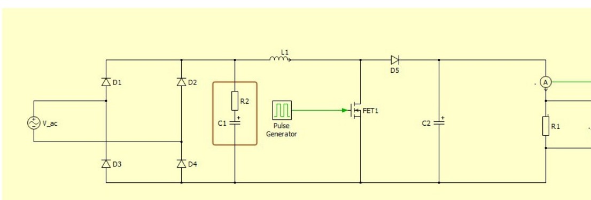
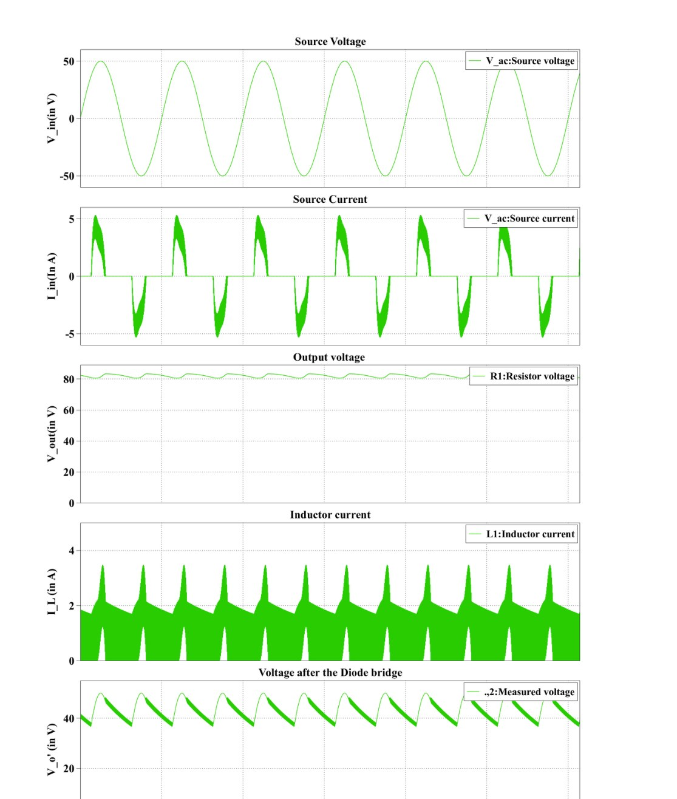

Overview
This project designed a boost-type power-factor-correction converter and its magnetic component. The required inductance, core area product, conductor size, turns and air gap were calculated before the inductor was physically wound in the lab.
Converter & magnetic design
The PLECS topology uses a rectified AC input followed by a boost stage. An EE 42/21/20 core and SWG-18 wire were selected, with approximately 87 turns and a calculated 2.56 mm air gap.

Simulation results
The PLECS model produced an average output voltage of approximately 82.07 V, closely matching the 82 V design target. The inductor-current waveform indicates discontinuous-conduction operation.

The topology was intended for PFC, but the implemented fixed-duty simulation achieved PF = 0.713 rather than near-unity PF. The website keeps that result visible instead of overstating the PFC performance.
Source material
The project narrative above is condensed from the submitted coursework/thesis and keeps design estimates, simulation results and demonstrated hardware distinct.